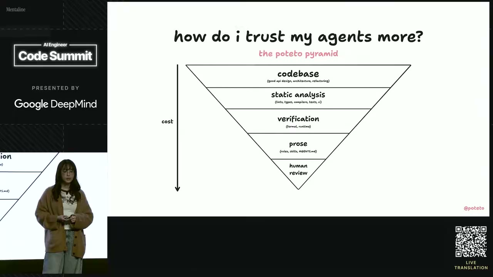

原视频 · 在线回看
点击后联网加载 B 站播放器；本地不下载整段视频。

原视频 · 在线回看
点击后联网加载 B 站播放器；本地不下载整段视频。
来源：Mentaline，《【中英双语】poteto：别再加规则了，把 Agent 的错误堵进代码里｜AIE Code Summit》，17:39，https://www.bilibili.com/video/BV1qtWC6jE2e/
阅读强度：standard
你接手一段别人写的代码，发现里面有重复逻辑、临时补丁和不一致的写法。过去，一名工程师一天能提交多少改动，团队大致能靠代码审查跟上；有了编程 Agent，代码可能在短时间内成批出现。一个团队的实践提出了工程问题：怎样在提高产量的同时，让新代码仍然可靠？他们从“信任”这个词出发，把它落实为项目边界、检查和验证方式，让 Agent 更容易按预期工作，也让人能检查它是否做到。
倒金字塔从宽端到尖端依次放着代码库、静态分析、验证、文字规则和人工审查。代码库包括项目 API、架构和重构后的实现；静态分析由类型系统、编译器和 lint 规则检查，例如让某类错误无法通过编译，或让依赖关系检查拒绝不合规的导入。验证会运行程序检查实际行为，也可以用形式化方法检查明确写出的性质。文字规则、技能和 AGENTS.md 仍然有用，但越往尖端，越依赖人工反复判断，单个问题的审查成本也越高。把反复出现的纠正变成可执行检查，可以让代码和检查器先拦下常见问题。
Agent 会把代码库当作大量输入来参照。假如某段旧代码用了过时接口、绕过约束的临时办法，或者留下了难以维护的模式，后续生成的代码就可能继续照着它写。代码库因此也需要像花园一样持续维护：开发者既要增加新功能，也要清理会扩散的坏模式，让后续生成有较好的既有范例可循。提交量增加后，重构和统一约定会直接影响 Agent 接下来能参考什么。
一个桌面应用框架团队处理过 React useEffect 的误用。这个 Hook 能让组件在渲染后与外部系统同步，但用它处理状态、数据流或组件关系时，很容易写出难以推理的副作用。团队限制了它在产品代码中的使用范围，只允许在少数框架接口处出现。这样，审查者不用每次看到 useEffect 都重新判断是否用对，代码检查也可以拦住越界的写法。
Electron 有两个运行区域：主进程负责应用层面的任务，渲染进程负责窗口界面。把主进程代码错误地引入渲染进程，可能造成长时间任务阻塞界面。团队把两类文件分别放进 electron-main/ 和 electron-renderer/ 目录，再通过依赖图分析器禁止跨边界导入。目录结构让人容易看出代码属于哪边，检查器则自动阻止不该发生的连接；规则既能读懂，也能执行。
文字说明也可能被 Agent 用来替临时修补找理由。一个例子是，Agent 在 Cursor 等代码里频繁加 setTimeout、requestAnimationFrame 或 requestIdleCallback，想绕过 VS Code 的命令式结构与 React 声明式结构之间的冲突。补丁旁边还留下解释，说明当前做法为什么“有必要”；但这些计时器不断增多，会增加垃圾回收和界面卡顿，注释却无法约束下一次修改。团队后来在自己的项目里大幅限制注释，转而编写 lint 规则，让检查器直接指出根因和应修方向。这种注释政策是他们的做法，其他项目可以按自己的需要决定。
当 Agent 写完代码，审查可以围绕验证结果展开。运行时验证是让 Agent 启动应用，用开发者工具或自定义命令实际操作。团队还整理了一份面向用户功能的地图，让“左边栏那个东西”对应到明确的功能名称。这样 Agent 可以按相同的功能词汇执行操作，审查者则能查看截图、录屏、图表等结果。复用一套命令行工具也能让操作更一致，并减少每次重新描述流程的负担。
团队还在试验形式化验证。TLA+ 用来描述并检查多设备通知等流程中的状态变化；Lean 用来证明特定算法的性质。该团队为自建的虚拟化库检查闪烁和抖动问题，并称已经借此发现一些 bug。这些方法仍在尝试中，无法覆盖所有错误。界面测试方面，他们也开始试用基于性质生成测试的工具，并报告发现了一些问题。
另一位工程师估计，自己每天使用的 token 中约有 70% 花在验证上；主讲者表示自己的体验也相近。代码产出并不等于工程工作完成，开发者还得确认代码是否符合目标、运行后表现怎样。自动化降低了运行测试、反复操作和检查结果的成本，因此原本费时的验证手段有机会更频繁地使用。
这个团队报告，上个月把约 11,000 个 pull request 合入生产，稳定版大约每天发布一次；当月至少提交一个 pull request 的贡献者约 227 人。团队还称，被回滚的 pull request 比例约为 0.5%，应用启动、输入、打开和切换对话等性能指标也有所改善。这些数字只描述该团队当时的情况，不能直接推成其他团队接入 Agent 后的结果。
可以从每次纠正 Agent 开始：先看看能不能改善代码库或新增 lint 检查；同时把旧代码里的相同问题清理掉，再建立足够清楚的运行时验证。等这条日常开发路径能稳定发现并修复问题，团队才更有条件把多个 Agent 接到更长的自动流程里。一个设想是每次发布后自动启动应用测试，让 Agent 像用户一样操作、寻找 bug，并为问题创建修复提交。这个流程能否放心自动合并，仍取决于项目里的约束与验证是否足够可靠。
Agent 提高代码生成速度后，工程师的重点转向维护它反复参考的代码环境，并把常见纠正转成可以执行的边界与检查。目录边界、依赖规则和 lint 能减少重复审查；运行时测试与形式化方法帮助确认结果是否符合预期。只有当验证方式能稳定发现问题，进一步自动化才有可靠基础。
useEffect 误用与隔离 Electron 主进程、渲染进程electron-main/ 和 electron-renderer/ 分开放置，并用依赖图分析器限制互相导入？